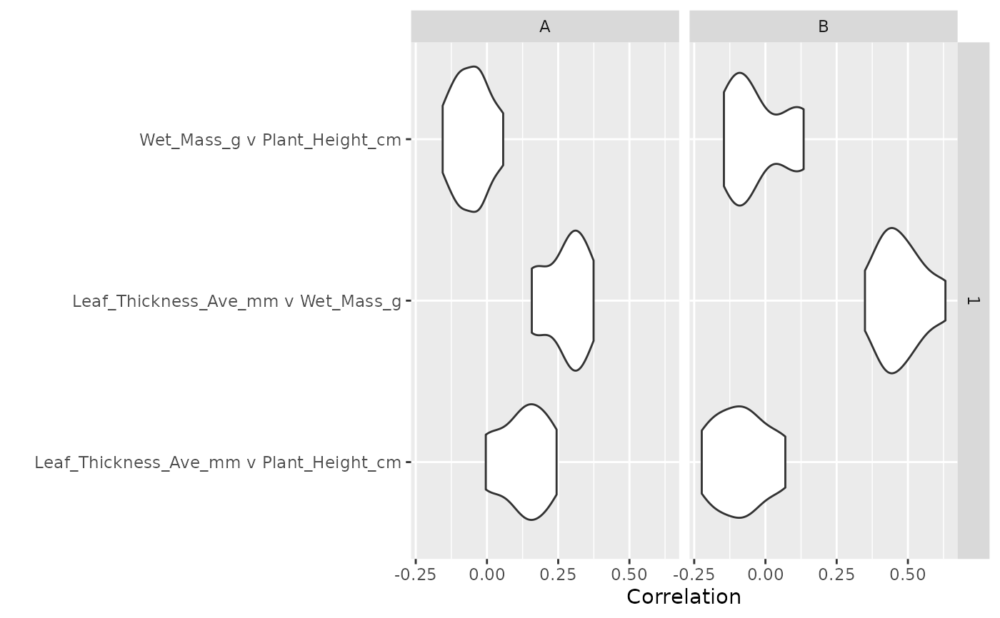

Function for nonparametric bootstrap resampling to calculate community weighted trait correlations, other bivariate or multivariate statistics
trait_multivariate_bootstrap(
selected_traits,
nrep = 100,
sample_size = 200,
raw = FALSE,
id = "ID",
fun
)output from the trait_fill function.
number of bootstrap replicates
bootstrap size
logical; argument to extract the raw data of the trait
distributions.
The default is raw = FALSE.
If raw = TRUE, nrep is restricted to 1 to avoid memory issues.
column name of unique identifiers of each leaf
bivariate or multivariate function to apply
a tibble
The observed and selected leaves are re-sampled in proportion to
their weights, e.g. the abundance of a species or the biomass.
Values across all individuals in a community are
resampled sample_size times to incorporate the full
spectrum of trait variation, generating nrep trait distributions.
The function fun is applied to the trait distribution at the finest level
of the filled trait hierarchy.
Note that due to the flexibility of this function,
the output CAN NOT be summarized using
trait_summarise_boot_moments.
require(dplyr)
require(tidyr)
#> Loading required package: tidyr
require(ggplot2)
require(purrr)
#> Loading required package: purrr
data(community)
data(trait)
selected_traits <- trait_fill(
comm = community |>
filter(
PlotID %in% c("A", "B"),
Site == 1
),
traits = trait,
scale_hierarchy = c("Site", "PlotID"),
taxon_col = "Taxon", value_col = "Value",
trait_col = "Trait", abundance_col = "Cover",
complete_only = TRUE, leaf_id = "ID"
)
# Note that more replicates and a greater sample size are advisable
# Here we set them low to make the example run quickly
boot_traits <- trait_multivariate_bootstrap(selected_traits,
fun = cor,
nrep = 10,
sample_size = 100
)
boot_traits_long <- boot_traits |>
mutate(correlations = map(result, ~ cor_to_df(.x))) |>
select(-result) |>
unnest(correlations)
boot_traits_long |>
ggplot(aes(x = paste(row, "v", col), y = value)) +
geom_violin() +
facet_grid(Site ~ PlotID) +
coord_flip() +
labs(y = "Correlation", x = "")
